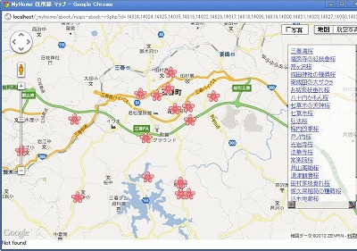
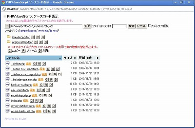
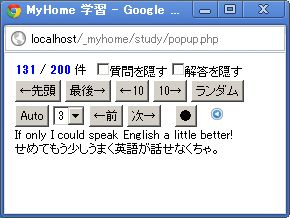
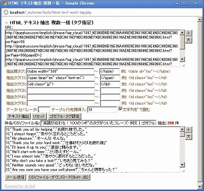
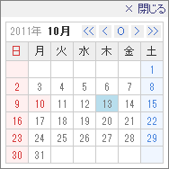
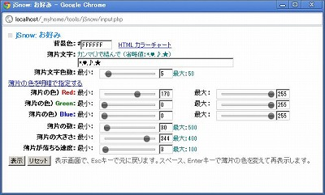
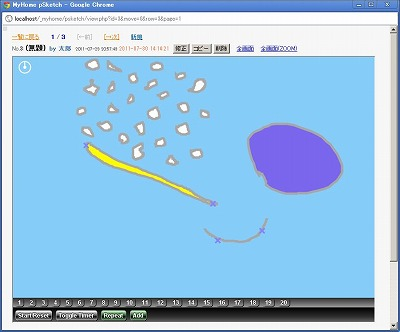
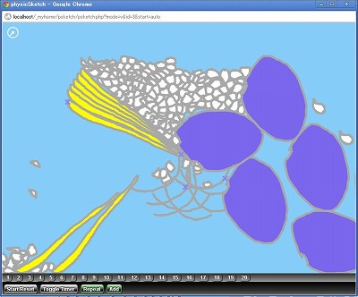
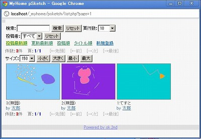

MyHome Portal 変更履歴
以下は、バージョン4.14以前の履歴です。 最新(4.15以降)の履歴に戻る
MyHome Portal Ver.4.14 (2012/02/19)
- 変更点
- 「住所録」の「世界遺産」のデータを更新しました。2011年までの世界遺産が登録されています。
- 「実運用サンプル」フォルダにCSVファイルとして「世界遺産_2011.csv」を入れています。
運用済みの実運用データベースの世界遺産データを差し替える場合は、次の手順で行ってください。
データを差し替えると、チェック項目のチェックデータ(サンプルでは制覇のデータ)が失われますので、ご注意ください。
1.既存のデータベースから世界遺産データを削除する。
コマンドプロンプトで、以下を実行する。(rootのパスワードがkanri789の場合)
注：id_categoryは実運用データベースの世界遺産の分類IDと同じものを指定してください。id_categoryは「住所録」の「分類編集」で確認できます。
事前にデータベースのバックアップをとることをお勧めします。
mysql -u root -pkanri789 use _mydb_abook; delete from m_abook where id_category = 4;
2.ツール「MySQL管理ツール」で、世界遺産_2011.csvをアップロードしてください。CSVファイルをアップロードする際は、id_account、id_categoryを実運用データベースに合わせた上でアップロードしてください。 - 「住所録」に「桜名木」データを追加しました。
データは、ホームページ「名桜・古桜・一本桜」のものを使わせていただきました。
http://yutabi.cside4.com/sakura/index.html
ただ、ここに登録されている緯度経度は、日本測地系というものらしく、そのままGoogle Mapsで使用すると位置がずれます。日本測地系から世界測地系に変換するには、厳密には複雑な計算式が必要らしく、県によって違う補正値も必要なようです。そこで、ホームページ「強火で進め：日本測地系から世界測地系に変換する」にあった簡易計算式で変換しました。
http://d.hatena.ne.jp/nakamura001/20080501/1209660263
世界測緯度 = 日本測緯度 - 日本測緯度 * 0.00010695 + 日本測経度 * 0.000017464 + 0.0046017; 世界測経度 = 日本測経度 - 日本測緯度 * 0.000046038 - 日本測経度 * 0.000083043 + 0.010040;
多少位置がずれますが、変換前よりは近い地点を表示できるようになりました。
桜名称と品種について、MeCabで読み変換したものを登録しています。正しい読みになっていないものも多くあります。 - 「住所録」分類フィルタで、「桜名木」を選択すると専用の一覧ページが表示されます。
桜の名称や住所で検索できます。都道府県フィルタや住所で検索してGoogleマップの作成等ができます。例えば、「群馬県田村郡三春町」の桜マップの作成ができます。 桜名称と品種について、MeCabで読み変換したものを登録しています。正しい読みになっていないものも多くあります。
 - 「実運用サンプル」フォルダにCSVファイルとして「桜名木.csv」を入れています。
実運用データベースに、桜名木データを追加登録する場合、まず、「分類編集」で分類を「桜名木」等の名前で登録してください。
その上で、ツール「MySQL管理ツール」で、この「桜名木.csv」をアップロードしてください。CSVファイルをアップロードする際は、 id_account、id_categoryを実運用データベースに合わせた上でアップロードしてください。 - 桜名木データを実運用データベースに登録した場合、桜名木の分類ID(id_category)を実運用定義ファイルで設定してください。
例）define("SAKURA_MEISHO_CATEGORY_ID", 6);桜名木データを実運用データベースに登録しない場合、実運用定義ファイルで-1を設定してください。例）define("SAKURA_MEISHO_CATEGORY_ID", -1); - 「住所録」の分類編集一覧にid_account,id_categoryを表示するようにしました。
- 「住所録」一覧にGoogleマップ以外に「Google Maps API V3版」へのリンクを追加しました。
- ツール「Google Maps API V3版」と「Google Maps (複数地点) API V3版 」に、マウスクリックした地点の緯度・経度と住所を表示する機能を追加。

- ツール「Google Maps API V3版」と「Google Maps (複数地点) API V3版 」に、Panoramioの写真を表示する機能を追加。
- 「カレンダー」「旅行記」「住所録」の、全画面マップに、Panoramioの写真を表示する機能を追加。

- ツールに「MeCab：漢字読み変換」「MeCab：漢字読み変換(CSVファイル一括)」を追加。
形態素解析エンジンMeCabを使って漢字の読みを変換します。正しい読みが取得できる保障はありません。
MeCab: Yet Another Part-of-Speech and Morphological Analyzer
http://mecab.googlecode.com/svn/trunk/mecab/doc/index.html
「MeCab：漢字読み変換」を使う場合は、MeCabを上記サイトからダウンロードし、実運用定義ファイルで、MeCabのインストールパスを設定してください。MeCabでインストールする辞書は「SHIFT-JIS」を前提にしています。
例：define("MECAB_EXE_PATH", "C:\Program Files\MeCab\bin\mecab.exe"); - 「MeCab：漢字読み変換(CSVファイル一括)」は、CSVファイルをアップロードし、指定列の漢字を読み変換した列を追加したCSVファイルをダウンロードできます。ただし、処理時間はかなり遅いです。

- 追加モジュール
・abook/list-my-template-sakura-meisho.php
・tools/mecab.php, mecab-csv.php
・実運用サンプル/桜.csv - おもな変更モジュール
・abook/__define.php, category.php, list.php, list-my-add-filter.php
・abook/list-my-template.php, list-my-template-*.php
・tools/google-maps-earth-v3.php, google-maps-earth-multi-v3.php
・calendar/maps-include-v3.php
・diary/__include-maps-v3.php
・abook/maps-abook-v3.php
・style/original/abook.css
・実運用サンプル/世界遺産_2011.csv
・z_db_backup/_db_abook.bk.txt
・__define_common_my_sample.php
MyHome Portal Ver.4.13 (2012/02/12)
- 変更点
- すべてのコンテンツの修正画面で、「削除」の確認を、事前チェックボックスでなく、JavaScriptのwindow.confirm()で確認する方式に変更しました。
- すべてのコンテンツで、<input type="checkbox">と<input type="radio">の項目名に<label>を付けて、テキスト部分をクリックしてもOn/Offが選択できるようにしました。
- 「アルバム」のサムネイル「頁枚数」変更で、ページがリセットされない不具合を修正。
- 「RSSリーダー」で、Ajax取り込み前に個々のRSS読み取り枠を空枠で用意するようにしました。
- 「住所録」の「電話・EMail表示なし」のOn/Offをページ遷移しない方式にしました。
- 「メモ」の翻訳機能を削除しました。(Google Translate API v1が廃止になっていて動作しないため。)
- 補足：「アルバム」のImageMagickを使った画像処理は、以前は画像ファイルのパス(ディレクトリやファイル名)に日本語が含まれていると処理できませんでしたが、ImageMagickの最新版では問題なく処理できるようです。
- 追加モジュール
・rss/ajax-rss-popup.php - 変更モジュール
・photo/ajax-photo-view.php
・rss/__include-common-rss.php, index.php, ajax-rss.php, popup-rss.php
・abook/list-my-template.php, list-my-add-filter.php
・その他多数。
MyHome Portal Ver.4.12 (2012/02/05)
- 変更点
- 「アルバム」のディレクトリ移動や画像ページ移動等の処理をAjax処理するようにしました。 これにより、ページ遷移がなくなり操作性がアップしました。
- 「アルバム」スライドモードのオートプレイを廃止しました。全画面表示では、オートプレイできます。
- 「アルバム」スライドモードの画像エフェクト機能を廃止しました。
- 「アルバム」スライドモードのルーペ機能を廃止しました。
- 「アルバム」にギャラリ6を追加。(IEでは正常動作しません。)
「FULLSCREEN BACKGROUND IMAGE SLIDESHOW WITH CSS3」を利用。
http://tympanus.net/codrops/2012/01/02/fullscreen-background-image-slideshow-with-css3/
demo4をベースにしています。画像がゆっくりとズームアップしながら、切り替わります。縦長画像にも対応するように調整しています。
GAEで作成した写真共有サイト「2nd Foto」にも追加しました。例えば、以下のページを開いて、右上の「Fullscreen Zoom」をクリックしてください。
※ 「2nd Foto」は、GAE無料枠で立ち上げていますので、Frontend Instance Hoursが制限時間を越えてしまってアクセスできない可能性があります。
http://2ndfoto.appspot.com/?user=aglzfjJuZGZvdG9yEgsSC1VzZXJBY2NvdW50GIwnDA - 「RSSリーダー」の個々のRSSリード処理を、Ajax非同期(async:true)で取り込むようにしました。
ただ、これだけでは、ブラウザがしばらく待ち状態になり、その間ページ遷移もできない状態は変わりません。Ajaxコールされる側のPHPのsession_start()コールを除いたら、レスポンスが劇的に向上しました。 - 追加モジュール
・photo/ajax-photo-view.php, __include-session-variable.php
・photo/gallery6.php
・photo/CSS3FullscreenSlideshow/*
・rss/ajax-rss.php - おもな変更モジュール
・photo/__define.php, __html-my-header.php, _contents-header.php, index.php
・rss/index.php, popup-rss.php
ただし、「フォルダ画像表示」状態では、フォルダ画像をシフトキーを押しながらクリックして別ウインドウを開く操作が出来るように、あえて通常のリンクにしています。
MyHome Portal Ver.4.11 (2012/01/22)
- 変更点
- ツール「ファイルマネージャー（暗号化/復号化付き）」と「PHP/JavaScript ソースコード表示&編集＋ファイルマネージャー」の、ファイル、フォルダーのコピー、削除、リネーム等時のファイル、フォルダー一覧再表示処理をAjax処理するようにしました。
- ツール「ファイルマネージャー（暗号化/復号化付き）」と「PHP/JavaScript ソースコード表示&編集＋ファイルマネージャー」の、ファイル一覧のファイル名、サイズ、更新日時での並び替え処理をJavaScriptで処理する方式に変更。JavaScriptは、jQueryプラグインのTablesorterを使用。
http://tablesorter.com/docs/ - 上記の仕様変更により、ページ遷移がなくなり、スクロール状態が保持されるため、操作性がアップしました。
- ツール「PHP/JavaScript ソースコード表示&編集＋ファイルマネージャー」で、ソース対象にPythonを追加しました。
- ツール「PHP/JavaScript ソースコード表示&編集＋ファイルマネージャー」でソースコード編集に使用しているeditareaのバージョンを0.8.2に上げました。

 - 追加モジュール
・scripts/tablesorter/*
・tools/file-manager-ajax.php, code-file-view-ajax.php - 変更モジュール
・tools/file-***.php, folder-***.php
・tools/code-file-view.php, code-file-view.php
・tools/__include-common-code-file.php
・tools/scripts/editarea/*
MyHome Portal Ver.4.10 (2012/01/16)
- 変更点
- ツール「ファイルマネージャー」の「複数ファイル・一括アップロード」を「jQuery-File-Upload」
https://github.com/blueimp/jQuery-File-Upload
を使う方式に変更。(ただし、IEは前の仕様のまま)
Windowsデスクトップから、ドラッグ&ドロップでアップロードファイルを指定できます。
- NDEXトップページ検索ボタンの以下の不具合修正。
Yahoo検索が、URLにei=UTF-8を付けないと文字化けする。
Yahoo電話番号検索URL変更対応。 - 追加モジュール
・tools/file-upload-drag.php, file-upload-drag-do.php
・tools/blueimp/* - 変更モジュール
・tools/file-manager.php
・index/__define_index_search.php
・__common__/include-common-all.php
・__define_index_search_my_google.php, __define_index_search_my_yahoo.php
MyHome Portal Ver.4.09 (2012/01/09)
- 変更点
- 「預貯金管理」に、「ライフプラン」追加。年単位の簡易資産運用シミュレーションができます。
初期資産と、毎年の収入・支出を入力して、毎年の資産残高を計算し、グラフ化します。
「預貯金管理」データとは連動しません。
最大9個まで、データを保存できます。データは、HTML5のlocalStorage(Webストレージ)に保存します。
JavaScriptのみで実現しています。PHPサイドの実処理はありません。
localStorageの使用には、JavaScriptライブラリ「jStorage」を利用。
http://www.jstorage.info/
SVG/VMLを使ったグラフ作成JavaScriptライブラリ「Highcharts」を利用。
http://www.highcharts.com/
- INDEXトップページのリンク先を開くウインドウの切り替え(同じウインドウ/新しいウインドウ)処理を、ページ遷移なく切り替える方式(JavaScriptで切り替え)に変更。
- INDEXトップページ検索ボタンの処理を変更。検索キー入力フィールドでReturnキーを押して1個目の検索ボタン処理をするのに、
<input type="submit">ではなく、<input type="button">でonkeypressでevent.keyCode===13で実行するように変更。
<input type="text" onkeypress="search_enter(event.keyCode);"> <script> function search_enter(keyCode) { if (keyCode === 13) { GoogleSch(); } } </script>定数「SEARCH_FORM_INPUT_TEXT_NAME」は不要にしました。INDEXトップページ検索ボタン定義ファイルを、
__define_index_search_my_google.phpまたは__define_index_search_my_yahoo.php
に設定している場合は、サンプルを参考に修正願います。 - INDEXトップページ検索テキスト枠の予測変換(単語補完)機能が働かなくなっていたのを修正。
Google Suggest APIがJSONをサポートしなくなったためで、XMLで処理するように修正。 - 追加モジュール
・kakeibo/lifeplan.php
・scripts/jstorage.js
・scripts/Highcharts/* - 変更モジュール
・kakeibo/_contents-header.php
・study/popup.php
・index/index.php, __define.php, __define_index_search.php, google-suggest.php
・__common__/__define_common.php
・__define_common_my_sample.php
・__define_index_search_my_google.php, __define_index_search_my_yahoo.php
・blog-parts/myhome-clock.inc
MyHome Portal Ver.4.08 (2011/12/12)
- 変更点
- 「学習」に、ポップアップ・ウインドウを追加。小さなポップアップ・ウインドウ内で、1件ずつ質問と解答を表示します。
「質問を隠す」/「解答を隠す」機能もあります。「●」ボタンで隠れている方を表示します。
「Auto」ボタンにすると、自動的に順次表示します。例えば、「解答を隠す」状態で「Auto」にすると、質問を表示して一定時間後に解答を表示します。「ランダム」ボタンを押した後に「Auto」ボタンをクリックするとランダムに自動表示します。
ポップアップ・ウインドウを、PCのデスクトップの隅において置けば、PC操作の合間に学習が出来ます。
 - ツール「HTMLテキスト抽出 複数一括 (タグ指定)」で、データ・セパレータを指定した時に、指定した抽出タグが見つからない場合もデータ・セパレータを出力し、テーブルの列がずれないようにしました。
- 追加モジュール
・study/popup.php - 変更モジュール
・study/__define.php, __html-my-header.php, _contents-header.php, mycheck.php
・tools/html-text-multi-tag.php, index.php
・__common__/include-common-html.php
・style/original/study.css
MyHome Portal Ver.4.07 (2011/12/05)
- 変更点
- ツール「HTMLテキスト抽出 複数一括 (タグ指定)」で、任意のオプションタグ設定ボタンを追加できるようにしました。
ボタン追加方法の詳細は、tools/html-text-multi-tag.phpのソースに記述しています。 - 変更モジュール
・tools/html-text-multi-tag.php
MyHome Portal Ver.4.06 (2011/12/03)
- 変更点
- ツール「HTMLテキスト抽出 複数一括 (タグ指定)」を追加しました。
複数のURLから一括してテキスト抽出します。任意の抽出タグを指定して、テキストを抽出します。
セパレータとしてカンマ(,)を指定することで、CSV形式にできます。抽出文字列を"で囲む(括る)ことも出来ます。CSVファイルとしてダウンロードすることも出来ます。 - NHK ゴガクルから、フレーズ・例文を抽出して、MyHome Portalコンテンツ「学習」にアップロードして、英会話の学習に役だてるなどできます。
フレーズ・例文集「英語が伝わる！１００のツボ」をダウンロードする例をとって、手順を簡単に説明します。
- まず、MyHome Portal「学習」で、カテゴリを登録します。
例えば、「カテゴリ編集」で「ゴガクル」を登録し、「サブカテゴリ編集」で「100のツボ」を登録します。 - 「サブカテゴリ編集」でサブカテゴリIDを確認します。id2がサブカテゴリIDです。

- 「HTMLテキスト抽出 複数一括 (タグ指定) 」で、ゴガクルのURLを指定してテキスト抽出します。
ゴガクルでは、表示件数を50件ずつに指定したURLを使います。以下のように50件ずつ4ページ分指定すると200件分ダウンロードできます。
http://gogakuru.com/english/phrase/tag_cloud/1847_%E8%8B%B1%E8%AA%9E%E3%81%8C%E4%BC%9D%E3%82%8F%E3%82%8B%EF%BC%81%EF%BC%91%EF%BC%90%EF%BC%90%E3%81%AE%E3%83%84%E3%83%9C.html?perPage=50
http://gogakuru.com/english/phrase/tag_cloud/1847_%E8%8B%B1%E8%AA%9E%E3%81%8C%E4%BC%9D%E3%82%8F%E3%82%8B%EF%BC%81%EF%BC%91%EF%BC%90%EF%BC%90%E3%81%AE%E3%83%84%E3%83%9C.html?perPage=50&pageID=2
http://gogakuru.com/english/phrase/tag_cloud/1847_%E8%8B%B1%E8%AA%9E%E3%81%8C%E4%BC%9D%E3%82%8F%E3%82%8B%EF%BC%81%EF%BC%91%EF%BC%90%EF%BC%90%E3%81%AE%E3%83%84%E3%83%9C.html?perPage=50&pageID=3
http://gogakuru.com/english/phrase/tag_cloud/1847_%E8%8B%B1%E8%AA%9E%E3%81%8C%E4%BC%9D%E3%82%8F%E3%82%8B%EF%BC%81%EF%BC%91%EF%BC%90%EF%BC%90%E3%81%AE%E3%83%84%E3%83%9C.html?perPage=50&pageID=4
「ゴガクル・タグ設定」ボタンで、抽出タグを設定できます。「テキスト抽出」ボタンを押します。
「テーブル行先頭挿入」欄に、「学習」のサブカテゴリID「13」を指定します。
「件名/ファイル名」を適当な名前に変更して、CSVファイルをダウンロードします。
 - ダウンロードしたCSVファイルに、ヘッダー行
id_category2,c_answer,c_question
を追加します。追加例。id_category2,c_answer,c_question 13,"Thank you all for helping.","お疲れ様でした。" 13,"I almost forgot.","あやうく忘れるところだった。" .....
- MyHome Portalツール「MySQL管理ツール」で、このCSVファイルをアップロードします。
データベース「_mydb_study」テーブル「m_study」を選択します。
「データ表示」画面を開き「CSVインポート」でCSVファイルをアップロードします。
アップロードデータを確認し、「このデータをインポートする」ボタンを押します。
-
MyHome Portalツール「学習」では、英語/日本語それぞれ隠すなどして、学習が出来ます。
- まず、MyHome Portal「学習」で、カテゴリを登録します。
- 追加モジュール
・tools/html-text-multi-tag.php - 変更モジュール
・tools/index.php, html-text-mail.php, html-text-multi.php
MyHome Portal Ver.4.05 (2011/11/06)
- 変更点
- 「カレンダー(一覧表示)」「ID管理」「利用ガイド」のキーワード検索時のキーワードハイライトがPHP処理だったのを、「メモ」「旅行記」と同様にjquery.highlight.jsを使用する方式に変更しました。
- 主な変更モジュール
・__common__/include-common-all.php
・calendar/list-my-template.php
・guide/list-my-template.php
・id-manager/list-my-template.php
MyHome Portal Ver.4.04 (2011/10/31)
- 変更点
- 「メモ」「旅行記」のキーワード検索時の、キーワードハイライトをPHP処理でなく、
jquery.highlight.jsを使用する方式に変更しました。
本文にURLが入っている場合に<a>タグのリンクが崩れる問題が解消されました。
≪JavaScript text higlighting jQuery plugin≫
http://johannburkard.de/blog/programming/javascript/highlight-javascript-text-higlighting-jquery-plugin.html
英数字の全角⇔半角、ひらがな⇔カタカナを区別しないでハイライトするための処理はPHPで行っています。 - 主な変更モジュール
・__common__/include-common-all.php
・memo/list-my-template.php
・diary/view.php, __include-view.php, list-my-template.php, list-marker-template.php - 追加モジュール
・scripts/jquery.highlight.js
MyHome Portal Ver.4.03 (2011/10/18)
- 変更点
- 「旅行記」で、マーカー地点のメモに改行が入っているとマップが表示されない不具合を修正。
- 主な変更モジュール
・diary/__include-maps-v3.php, __include-maps.php
MyHome Portal Ver.4.02 (2011/10/17)
- 変更点
- 「カレンダー」、「旅行記」の日付入力補助ポップアップカレンダーを、「ホームページの素」
http://www.kanaya440.com/contents/js/calendar/
のものから「WEB上手：カレンダーで日付の入力補助をする」
http://www.web-jozu.com/javascript/calen_input.html

のものに変更しました。一部修正して使っています。
なお、実運用定義ファイルで
define("INPUT_POPUP_CALENDAR_calendar", "kanaya");を指定することで「ホームページの素」のものを使うこともできます。「ホームページの素」のものもデザインを修正しました。
- 「カレンダー」のデザインを一部修正。
- 「メモ」のtextarea入力で、タブの入力を可能にしました。複数行選択して、インデントをすることもできます。タブ入力には、jquery.textarea.jsを使用しています。
http://teddevito.com/demos/textarea.html - 「メモ」の翻訳機能が正常動作しなくなっていたのを修正。Google AJAX Language APIで、
http://www.google.com/jsapiのコール時に、APIキーを指定すると正常動作しなくなっているようなので、APIキーを外しました。 - 「RSSリーダー」に、RSS本文も合わせて表示するポップウインドウを追加しました。右側の↑をクリックすると、ポップウインドウが開きます。「RSSリーダー」ではサーバーサイドでRSSフィードを読み取って一定時間キャッシュしていますが、今回追加したものは、クライアントサイドで、都度RSSフィードを読み取って表示します。実現には「FeedEk jQuery RSS/ATOM Feed Plugin」を使用しています。
http://jquery-plugins.net/FeedEk/FeedEk.html
- 主な変更モジュール
・calendar/input.php, _my_calendar.php, _add_input_header.php, list-my-template.php
・diary/input.php, _add_input_header.php
・memo/__html-my-header-translate.php
・rss/__define.php, _add_header_index.php
・scripts/calendar.js
・scripts/style/calendar.js.css
・style/original/calendar.css
・__define_common_my_sample.php - 追加モジュール
・calendar/_add_input_header-kanaya.php
・diary/_add_input_header-kanaya.php
・rss/feed.php, __include-common-rss.php
・rss/feed/*
・scripts/jquery.textarea.js
・scripts/calen_input/*
MyHome Portal Ver.4.01 (2011/09/14)
- 変更点
- パスワードをhash()で暗号化してからCookie保存するようにしました。
- ツール「テキスト縦書き表示」をChromeでも使えるようにしました。
縦書き表示は、IE9ではルビ付きの場合、レイアウト崩れを起こします。また、印刷が1ページだけになってしまいます。
Chromeでは、PDF Viewerによる印刷プレビューを無効にしないと、印刷でフォントが横向きになってしまいます。
参考：Chrome縦書き印刷不具合の解消方法
http://ok2nd.blog87.fc2.com/blog-entry-294.html - ツール「テキスト縦書き表示」でソース・タイプを、HTML、テキストの選択が出来るようにしました。HTML指定の場合、改行コードで改行はしません。
- ツール「jSnow：お好み」で、スライダーを使ってオプション選択が出来るようにしました。slider.jsを使っています。
http://www.frequency-decoder.com/demo/slider-revisited/
 - ツール「HTML URL抽出 & ファイルダウンロード」に、 Simple HTML DOM Parser版を追加しました。
Simple HTML DOM Parserを使ってHTML解析をします。
http://simplehtmldom.sourceforge.net/
ただし、メモリオーバーフローの可能性があります。以下のようなエラーメッセージが出ます。
Fatal error: Allowed memory size of 33554432 bytes exhausted (tried to allocate 2496 bytes) - ツールにシステム管理者用機能として、「PHPサーバー変数($_SERVER)一覧」を追加しました。
- 主な変更モジュール
・account/__include-login.php, login.php, edit-mypass.php
・id-manager/__include-im-login.php, im-login.php
・tools/index.php, tategaki.php, tategaki-form.php
・tools/jSnow/input.php, opt.php
・__common__/__define_common.php, include-common-all.php - 追加モジュール
・tools/jSnow/slider/*
・tools/html-get-url-img-simplehtmldom.php
・tools/simplehtmldom/*
・tools/server-variable.php
MyHome Portal Ver.4.00 (2011/08/25)
- 変更点
- Ver.1.00リリースから約3年経過で4年目に入ったということで、Ver.4.00としました。
- INDEXトップページ検索キー入力ボックスのGoogle Suggest APIを使った予測変換(単語補完)を、オフにもできるようにしました。検索キー入力ボックスの左の●をクリックしてください。jquery.autocomplete.jsを一部改造したjquery.autocomplete_my.jsを使っています。
- INDEXトップページ検索キー入力ボックスのGoogle Suggest APIを使った予測変換(単語補完)プルダウンを、スクロールバーを出さずに候補10個が全て見えるようにしました。
- INDEXトップページ右上の日付け表示のフォントサイズを大きくしました。
- 「住所録」の入力画面に住所検索機能を追加しました。住所の一部から、郵便番号と住所を検索します。
グルーブテクノロジー株式会社の「郵便番号検索API」を利用しています。
http://groovetechnology.co.jp/webservice/zipsearch/index.html - ツール「jSnow お好み」で、カラーピッカーが使えるようにしました。カラーピッカーは、JSColorを使っています。
http://jscolor.com/ - 主な変更モジュール
・index/index.php, _add_header-index.php, __define_index_search.php
・__define_index_search_my_google.php, __define_index_search_my_yahoo.php
・blog-parts/myhome-clock.inc
・scripts/jquery.autocomplete.css
・abook/input.php
・tools/jSnow/input.php, opt.php ・style/original/index.css - 追加モジュール
・abook/zip-search.php
・scripts/jquery.autocomplete_my.js
・scripts/jscolor/* - ※ MyHome Portalツール「jSnow：お好み 」をGoogle App Engine 上に移植した「2nd jSnow」を作成しましたした。興味のある方はアクセスしてみてください。
http://2ndjsnow.appspot.com/
http://ok2nd.blog87.fc2.com/blog-entry-286.html
MyHome Portal Ver.3.37 (2011/08/18)
- 変更点
- INDEXトップページの検索に、Google Suggest APIを使った予測変換(単語補完)機能を組み込みました。検索キー入力ボックスでは、jquery.autocomplete.jsを使用しています。
http://bassistance.de/jquery-plugins/jquery-plugin-autocomplete/ - INDEXトップページのTwitter検索ボタンを、Googleリアルタイム検索がサービス停止になっているので、search.twitter.comによる検索に戻しまた。
- 「ID管理」のtextareaのリサイズを、カレンダー、メモ等と同じく、大小ボタンを押す方式でなく、自動リサイズ方式にしました。
- 主な変更モジュール
・id-manager/input.php
・index/index.php, __define_index_search.php
・__define_index_search_my_google.php, __define_index_search_my_yahoo - 追加モジュール
・index/google-suggest.php, _add_header-index.php
・scripts/jquery.autocomplete.js, jquery.autocomplete.css - ※ Google App Engine (Python) のトライアルシステムとして写真共有サイトらしきもの「2nd Foto」、Ghostwriterを使った「2nd Pen」を作成してみました。興味のある方はアクセスしてみてください。
http://2ndfoto.appspot.com/
http://ok2nd.blog87.fc2.com/blog-entry-280.html
http://2ndpen.appspot.com/
http://ok2nd.blog87.fc2.com/blog-entry-283.html
MyHome Portal Ver.3.36 (2011/08/01)
- 変更点
- ツールに、物理エンジンを使った物体落下シミュレーションゲーム(?)「physicSketch」を追加しました。画面上に図形を描くと、その図形が物理法則に従って落下します。
あんどうやすしさん作成のJavaScriptライブラリ「physicsketch.js」「box2d.js」を使っています。Chromeで動作確認しています。
http://physicsketch.appspot.com/
http://physicsketch.appspot.com/app/list
落下スピードを変えることもできるようにしました。
表示画面では、作成した図形をセットで次々に追加して落下させたりもできます。結合した図形がバラバラになったりして、複雑な動きが楽しめます。





Ver.3.36以前で既に環境を構築済みの場合は、以下の手順で「physicSketch」の環境設定をしてください。コマンドプロンプトで以下を実行してください。以下、MySQL管理者ユーザーrootのパスワードを「kanri789」、インストールドライブを「D:」として説明します。
≪サンプルデータベース作成≫
mysql -u root -pkanri789 create database _db_psketch; exit d: cd "D:\xampp\htdocs\_myhome\z_db_backup" mysql -u root -pkanri789 _db_psketch < _db_psketch.bk.txt mysql -u root -pkanri789 _db_psketch < create_view_db_psketch.txt mysql -u root -pkanri789 GRANT SELECT,INSERT,UPDATE,DELETE ON _db_psketch.* TO myhome@localhost; FLUSH PRIVILEGES; exit≪実運用データベース作成＆環境設定≫
＊実運用データベース作成
・MySQLを一旦停止します。
net stop mysql・データベース「_db_psketch」をコピーして、実運用データベース「_mydb_psketch」を作成します。
mkdir D:\xampp\mysql\data\_mydb_psketch copy D:\xampp\mysql\data\_db_psketch\* D:\xampp\mysql\data\_mydb_psketch・MySQLを再起動します。
net start mysql・データベースのビューを作成します。
d: cd "D:\xampp\htdocs\_myhome\z_db_backup" mysql -u root -pkanri789 _mydb_psketch < create_view_mydb_psketch.txt・データベースのアクセス権を設定します。
mysql -u root -pkanri789 GRANT SELECT,INSERT,UPDATE,DELETE ON _mydb_psketch.* TO myhome@localhost; FLUSH PRIVILEGES; exit;・サンプルデータを削除します。
mysql -u root -pkanri789 use _mydb_psketch; truncate table m_psketch; truncate table m_comment; exit;＊実運用定義ファイル __define_common_my.phpに、以下を追加してください。
define("_DB_SCHEMA_psketch", "_mydb_psketch");
・psketch/一式
・style/original/psketch.css
・z_db_backup/_db_psketch.bk.txt, create_view_db_psketch.txt, create_view_mydb_psketch.txt
・tools/index.php
・db_tool/backup-mydb.php
・__define_common_my_sample.php, setup-sample.php, db_restore.txt.php.php, db_backup.txt.php
MyHome Portal Ver.3.35 (2011/07/27)
- 変更点
- 住所録、旅行記、アカウント情報修正の入力画面および各コンテンツの一覧形式の「一括修正/追加/削除」画面に以下の機能を追加しました。
・半角英数字入力欄で、全角英数字を半角に自動変換。
・全角入力欄で、半角カナを全角に自動変換。
・ひらがな入力欄で、カタカナをひらがなに自動変換。
・EnterキーでTabキー同様に入力フィールド移動。
これらの機能は、以下のJavaScriptを利用しています。
《valueconvertor.js》
ヨモツネット：入力されたテキストを自動で指定の形式(半角, 全角, ひらがな, 全角カタカナ)に変換する
http://www.yomotsu.net/lab/javascripts/valueconvertor
《jqKey.js》
せかにゃ～：Enter/Tab項目移動とFunctionKey制御をplugin化
http://d.hatena.ne.jp/Hidepyon/20110220/1298217228
以下のサイトを参考にさせていただきました。
CSS HappyLife：実装が簡単で、フォームの使い勝手を向上させるJS 3種
http://css-happylife.com/archives/2011/0630_0300.php

- 変更モジュール
・__common__/include-common-mp-list.php
・abook/input.php, list.php
・account/edit-myprofile.php
・diary/input.php - 追加モジュール
・scripts/valueconvertor.js, jqKey.js